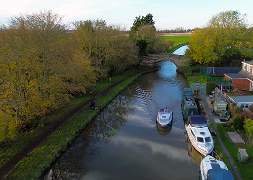

Lydiate Mooring at Bridge 17
Lydiate
Main LocationOur main mooring location with moorings on both north and south banks of the clubhouse at bridge number 17, Pilling Lane, Lydiate. The area immediately in front of the clubhouse is kept clear of permanent moorings for the use by the Commodore, visitors and access to the pump-out and refuelling berths.
- Location
- Bridge 17, Pilling Lane, Lydiate
- Position
- North and south banks of the clubhouse
- Facilities
-
- Clubhouse access with function hall and bar
- Pump-out berth
- Diesel and gas available for sale with clean facilities
- Access to electricity and running water for all boats
- South bank community hut for social gatherings
- Winding hole for vessel turning
- Secure car park
- Special Features
- Reserved area in front of clubhouse for Commodore and visitors. This is our main location with the most comprehensive facilities.
- Contact
-
Bank Chairman: Paul Parry 07827 353681
North Berthing Manager: Barry Snowball 07817 447295
South Berthing Manager: Peter Roberts 07739 448529